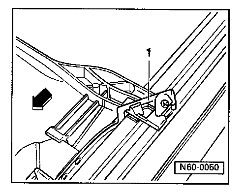

Installation
Sunroof Headliner Installation

- Remove springs-1- from headliner.
Always use new self-locking screws.
- Insert headliner in roof cut-out. Insert headliner slide in guide channel (slide screwed onto headliner). Insert slide on other side into guide channel and secure with screw to headliner.
Always use new self-locking screws.
- Slide headliner to rear, until springs -1- engage.